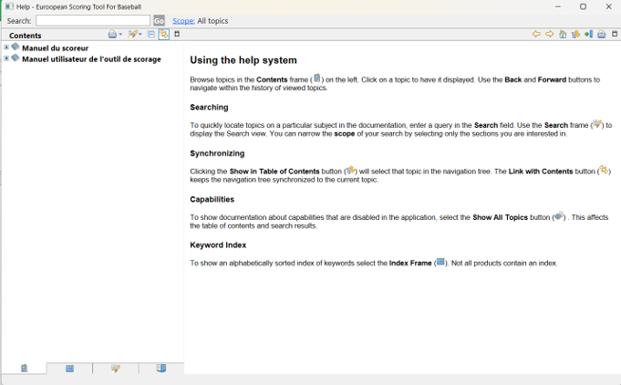
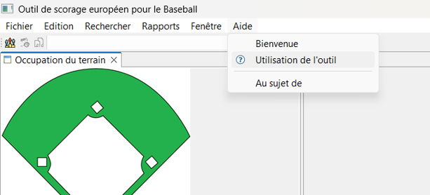

If you are reading this, it means you have already found your way to the help section: the Help menu, followed by Help Contents. This serves as the entry point to this documentation, which is accessible at any time while using the tool, no Internet connection required.

This assistance is divided into three distinct parts:

The help system is installed along with the tool and opens in a dedicated window or within an application view, depending on the configuration. It describes the tool’s underlying principles, its editors, its views, and its data-entry functions. Since it is bundled with the application, it always corresponds to the version you are using.
The help window is organized into two areas:
The table of contents, on the left, displays the chapters in a tree structure. Clicking on a title opens the corresponding page.
The content on the right displays the selected page. Links allow you to move from one page to another, and navigation buttons let you go back or forward, just as in a web browser.
You can perform a search to quickly find a page based on a word or phrase, without having to browse through the entire table of contents. The results are ranked by relevance, and clicking on a result opens the corresponding page.
You can add a help page to your favorites to find it more quickly, and you can print the displayed page if you would like to have a hard copy.